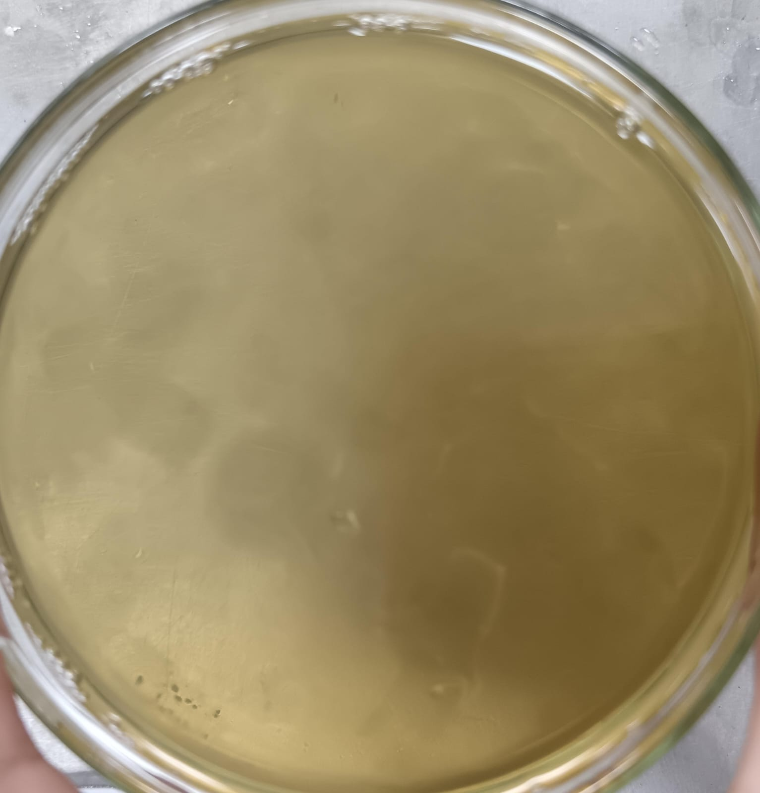
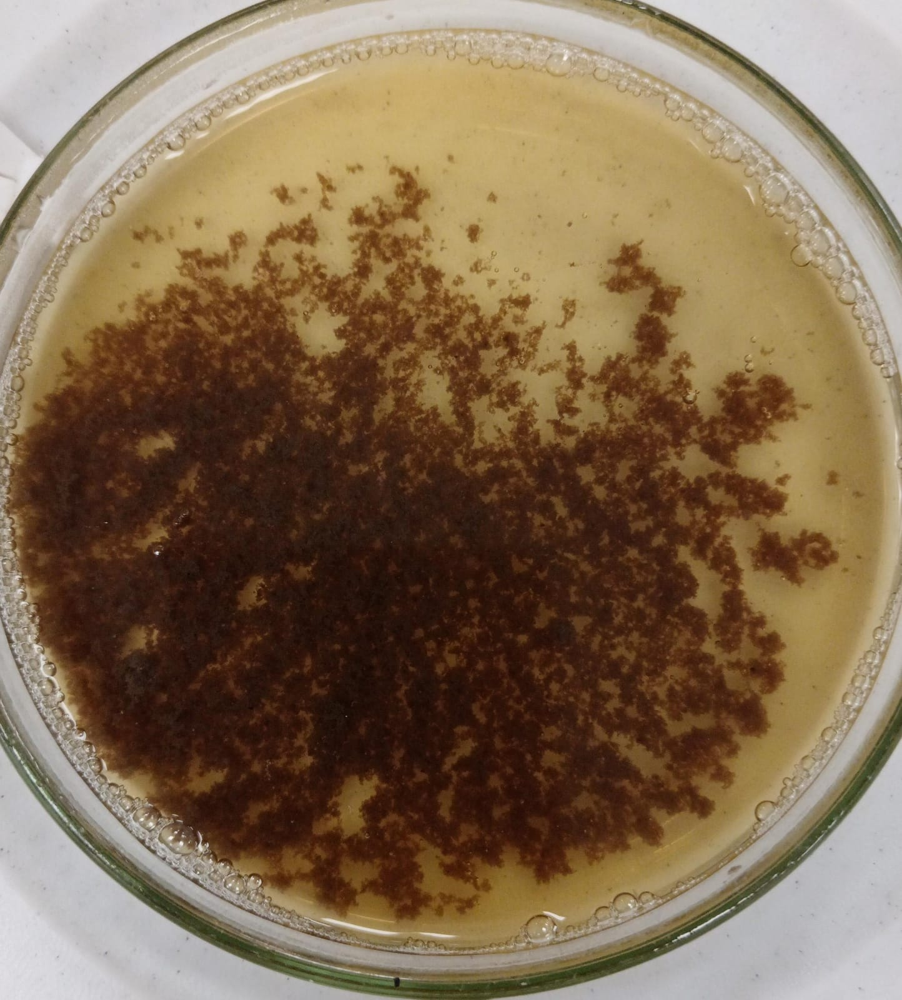

PROCESO DE TRATAMIENTO Y CLARIFICACIÓN DEL JUGO DE CAÑA EN EL PROCESO DE ELABORACIÓN DE AZÚCAR RUBIA.
Supervisor COI AGROLMOS S.A.
INTRODUCCIÓN
El tratamiento y clarificación del jugo es la etapa crítica en la fabricación de azúcar rubia.
Objetivo: Eliminar la mayor cantidad de no-azúcares (coloides, tierras, bagacillo, ceras y
colorantes) mediante la formación de un flóculo químico, causando el menor impacto
posible en la sacarosa.
A continuación, se desarrolla en detalle cada uno de los puntos bajo un enfoque técnico
y operativo:
AGROLMOS S.A. - Automatización e Ingeniería de Vanguardia.
Proyecto Agroindustrial Moderno: Integración de tecnología de punta en el norte del Perú.
5,500 TCD: Alta exigencia operativa y procesamiento a gran escala.
Control Híbrido: Máxima recuperación de sacarosa mediante sistemas Honeywell DCS
Experion y PLCs.

Supervisor COI AGROLMOS S.A.
OBJETIVO
Optimización integral de todos los Procesos de Fabricación.
Nuestra planta está diseñada para una alta exigencia operativa, contando con una capacidad de molienda de 5,500 toneladas de caña por día. Procesar este volumen de materia prima de manera eficiente, garantizando la máxima recuperación de sacarosa y un consumo energético óptimo, sería imposible sin una estrategia de automatización robusta.
En AGROLMOS, la clave de nuestra eficiencia radica en un sistema de control híbrido. Por un lado, la velocidad de respuesta de los PLCs asegura la continuidad mecánica de nuestros equipos y sistemas de bombeo. Por el otro, la inteligencia analítica del DCS Honeywell Experion gobierna las variables químicas y térmicas en tiempo real.
1. Fundamentos Químicos y Térmicos del Proceso.
1.1.- Fosfatos:
El contenido de fosfato natural en el jugo de caña es el motor de una buena clarificación.
- • Mecanismo: Al adicionar cal al jugo, el calcio reacciona con los fosfatos solubles para precipitar como fosfato tricálcico, una red gelatinosa que atrapa físicamente las impurezas coloidales y suspendidas.
- • Variable de Control: Para lograr un asentamiento rápido y un jugo brillante, el jugo encalado debe tener un nivel óptimo de entre 250 y 350 ppm. Si el jugo viene pobre del campo, es mandatorio dosificar ácido fosfórico industrial antes del encalado.
Supervisor COI AGROLMOS S.A.
DESCRIPCIÓN GENERAL DEL PROCESO
A lo largo de esta presentación, haremos un recorrido técnico y detallado por el corazón del ingenio: el proceso que va desde la recepción del Jugo Colado en nuestro tanque de 30 m3, pasando por un estricto perfil de calentamiento en cuatro etapas en serie hasta alcanzar los 103°C, la dosificación milimétrica de insumos a 3 ppm, la evacuación automatizada de lodos de 15 a 18 m³/h hacia el Difusor, hasta la entrega de un Jugo Claro continuo y perfectamente purificado.
“Bienvenidos a la ingeniería detrás de la producción de azúcar rubia en AGROLMOS S.A."
1.2.- Sacarato de Calcio:
Tecnología Antigua: Lechada de Cal como lechada directa (que puede causar zonas de alto pH local y destruir la fructosa/glucosa generando color)
Tecnología Moderna: La tecnología moderna utiliza Sacarato de Calcio.
- • Preparación del Sacarato: Se mezcla una porción de Jugo Claro o de Meladura con la lechada de cal.
- • Ventaja operativa: El calcio se solubiliza en forma de complejos de sacarato, lo que permite una reacción de neutralización mucho más homogénea, rápida y con menor impacto en la formación de color, algo vital para mantener el estándar de la azúcar rubia.
Variables de Control:
- • Lechada de Cal = °Be (8 a 10)
- • Sacarato de Calcio = Brix (30 a 35)
Supervisor COI AGROLMOS S.A.
AUTOMATIZACIÓN HÍBRIDA EN PREPARACIÓN Y CLARIFICACIÓN DEL JUGO
1. Recepción de Jugo Colado (Tanque de 30 Ton3)
El proceso inicia con el jugo crudo ya tamizado en un tanque pulmón de 30 Ton3.
Rol del DCS Honeywell: Monitorea el nivel analógico continuo del tanque (de 0 a 100%) mediante un sensor de presión hidrostática o ultrasónico. El DCS regula un lazo PID que controla la velocidad de las bombas industriales de salida (usando variadores de frecuencia) para asegurar que el flujo hacia la fábrica sea estable y el tanque jamás rebose ni se quede seco.
Rol del PLC: Maneja la lógica de protección e interbloqueos eléctricos de las bombas. Si el tanque llega a un nivel crítico ultra-bajo, el PLC apaga la bomba de inmediato por hardware para evitar que trabaje en seco y sufra cavitación.
1.3.- Temperatura del Jugo:
El control térmico es el catalizador de las reacciones químicas y la remoción de aire:
- • Primera Etapa (Calentamiento Primario): Se eleva el jugo crudo de 55°C a 97°C para optimizar la velocidad de reacción con el sacarato y activar las pectinas.
- • Segunda Etapa (Calentamiento Secundario): Post-encalado, el jugo se lleva a 102°C - 105°C (sobrecalentamiento). Esto asegura la desnaturalización completa de proteínas, coagulación de coloides y la posterior expansión en el tanque flash.
Supervisor COI AGROLMOS S.A.
2. Dosificación Automática de Sacarato de Calcio (Alcalinización)
Aquí el jugo crudo recibe el sacarato de calcio para neutralizar los ácidos orgánicos y permitir la posterior floculación.
Acción del DCS: Es un control analógico crítico. El DCS lee constantemente el valor de un sensor de pH en línea instalado después de la dosificación. Si el pH varía, el algoritmo PID del DCS ajusta milimétricamente la carrera o velocidad de la bomba dosificadora de sacarato para mantener el pH en el punto de consigna exacto (ejemplo Jugo Encalado = 7.5). Además, cruza esta información con el flujo de entrada de jugo para hacer un control predictivo (feedforward).
Variables de Control del Proceso de Calentamiento del Jugo de Caña:
- • Equipo Intercambiador de Calor de Placas del Jugo = Ingreso 55°C – Salida 67°C
- • Equipo Calentador de Casco y Tubo 1 = Ingreso 67°C – Salida 88°C
- • Equipo Calentador de Casco y Tubo 2 = Ingreso 88°C – Salida 97°C
- • Calentador de Contacto Directo = Ingreso 97°C – Salida 103°C
Supervisor COI AGROLMOS S.A.
3. Proceso de Calentamiento del Jugo (El Corazón Térmico - Control DCS)
El jugo debe elevar su temperatura gradualmente para optimizar las reacciones químicas y ahorrar energía. El DCS Honeywell gobierna las válvulas de control neumáticas que inyectan el vapor en cada etapa.
3.1 Intercambiador de Calor de Placas (ICP)
Proceso: El jugo ingresa a 55°C y sale a 67°C utilizando calor recuperado de fluidos del propio ingenio (máxima eficiencia energética).
Control: El DCS monitorea la temperatura de salida (67°C) y regula el flujo del fluido calefactor mediante una válvula modulante.
2. Descripción y Operación de Equipos.
2.1.- Calentadores de Casco y Tubo (Intercambiadores de Coraza)
- • Descripción: Equipos cilíndricos horizontales o verticales donde el jugo circula por el interior de los tubos (pasos múltiples) y el vapor de escape o de purga de las evaporaciones circula por la coraza (casco).
- • Función: Permiten un control por etapas aprovechando vapores de baja presión, aunque requieren limpiezas químicas periódicas debido al incrustamiento de sales de calcio en los tubos.
Supervisor COI AGROLMOS S.A.
3.2 Calentadores de Casco y Tubos (CCT)
Aquí se utiliza vapor de los sistemas de evaporación en dos etapas en serie:
CCT-1: Recibe el jugo a 67°C y lo eleva a 88°C. El DCS controla el ingreso de vapor (usualmente vapor de tercera o cuarta presión de evaporación).
CCT-2: Recibe el jugo a 88°C y lo lleva hasta los 97°C usando vapor de mayor entalpía. El control analógico aquí es estricto para no quemar el azúcar en las paredes de los tubos si el flujo de jugo disminuye.
2.2.- Calentadores de Contacto Directo (CCD)
- • Descripción: Columnas donde el jugo se atomiza o cae en cascada directamente sobre una atmósfera de vapor.
- • Función: Eliminan la resistencia de la pared del tubo, logrando una eficiencia térmica cercana al 100% y eliminando el problema de las incrustaciones. Se usan estratégicamente para el calentamiento final antes del tanque flash.
Supervisor COI AGROLMOS S.A.
3.3 Calentador de Contacto Directo (CCD)
Proceso: El jugo da el salto final de 97°C a 103°C mezclándose directamente con vapor de escape.
Control: Al romper el punto de ebullición, el DCS mantiene el lazo cerrado midiendo la temperatura de salida a 103°C para abrir o cerrar el paso de vapor, asegurando que los gases incondensables sean liberados correctamente.
2.3.- Tanque Flash (Desgasificador)
• Descripción: Un recipiente vertical cilíndrico donde el jugo sobrecalentado (103°C) ingresa tangencialmente a presión atmosférica.
• Función: La caída brusca de presión provoca la evaporación instantánea (flasheo) del agua sobrante, liberando violentamente las burbujas de aire y gases ocluidos en el jugo. Sin este equipo, las burbujas flotarían en el clarificador, rompiendo los flóculos y arruinando la sedimentación.
• Proceso: El jugo secundario sale de los calentadores o del calentador de contacto directo (CCD) a unos 103°C - 105°C bajo presión. Al ingresar al tanque flash, esa presión se libera bruscamente hasta igualar la presión atmosférica.
• Este cambio provoca una evaporación instantánea espontánea (flasheo). El agua que se evapora absorbe el calor latente del propio jugo, lo que provoca una caída natural y necesaria de la temperatura hasta su punto de ebullición atmosférico, que oscila entre los 99°C y 100°C (dependiendo de la altitud de la planta y los grados Brix del jugo). El jugo entra al clarificador SRT inmediatamente después de este proceso.

Supervisor COI AGROLMOS S.A.
4. Tanque Flash y Alimentación al Clarificador SRT
Al salir a 103°C, el jugo entra al Tanque Flash para liberar la presión, eliminar el aire y los gases atrapados (que impedirían que las impurezas floten o decanten), y estabilizar el líquido antes de entrar al clarificador SRT.
Automatización Integrada: El DCS realiza el control automático del nivel del tanque flash mediante una válvula automática instalada en la tubería de ingreso de jugo al Clarificador SRT. Si el nivel en el tanque flash sube, la válvula del DCS se abre de forma proporcional para enviar más jugo al SRT, manteniendo una alimentación hidrostática perfectamente suave y sin turbulencias.
2.4.- Clarificador SRT (Short Retention Time – Corto Tiempo de Retención)
• Descripción: Clarificadores modernos de bajo volumen y diseño aerodinámico, que reemplazan a los antiguos y masivos decantadores tipo Dorr.
• Función: Operan con tiempos de residencia de solo 30 a 45 minutos (en lugar de 2 a 3 horas). Reducen drásticamente las pérdidas de sacarosa por inversión térmica y la ganancia de color, entregando un jugo claro continuo y lodos densos.
• En su interior el jugo debe mantenerse en un rango de temperatura estrictamente controlado de 99°C a 101°C (idealmente clavado en 100°C).
Supervisor COI AGROLMOS S.A.
5. Dosificación Automática del Floculante
Para que las impurezas se aglutinen y decanten rápido en el SRT, se inyecta polímero en una dosis exacta de 3ppm (partes por millón).
Acción del DCS: El DCS lee el flujómetro magnético de ingreso de jugo al clarificador y, mediante un cálculo matemático de relación (ratio control), ajusta la velocidad de la bomba de floculante. Si el flujo de jugo cambia, la bomba de floculante acelera o frena de inmediato para asegurar que en cada tonelada de jugo existan estrictamente los 3 gramos de floculante requeridos.
A continuación, se detallan las razones técnicas y fisicoquímicas de por qué este rango es el óptimo (100 °C temperatura del jugo en el Clarificador SRT):
A. Evitar Corrientes de Convección (El enemigo del SRT)
Si el jugo entrara al clarificador SRT sobrecalentado (a más de 101°C), continuaría hirviendo o liberando vapor microscópico dentro del equipo.
• El problema: Estas burbujas residuales y las diferencias de densidad por exceso de calor generan corrientes de convección (remolinos internos).
• El impacto: En un clarificador SRT, el tiempo de residencia es extremadamente corto (30 a 45 minutos) y el flujo es laminar. Cualquier turbulencia interna rompe los macroflóculos secundarios y hace que suban a la superficie, provocando un jugo claro turbio, con "pin-flocs" y arrastre de lodo hacia los evaporadores.
Supervisor COI AGROLMOS S.A.
6. Derivación Automática de Lodos al Difusor
En el fondo del clarificador SRT se concentran las impurezas (cachaza/lodos). En tu ingenio, estos lodos no van a filtros de vacío comunes, sino que se evacuan de forma automática y continua hacia el Difusor a un flujo controlado de 15 a 18m3/h.
El Trabajo Híbrido: El DCS controla el lazo analógico del flujómetro de lodos y regula la válvula de control (o variador de la bomba de lodos) para que la evacuación se mantenga estrictamente en el rango de 15 a 18 m3/h. Por otro lado, el PLC controla el sistema mecánico de las rastras inferiores del SRT (torque del motor, alarmas de sobreesfuerzo y lógicas de lavado manual si las tuberías se llegan a tupir).
B. Prevenir la Inversión de la Sacarosa
Como el jugo pasa por el clarificador durante casi tres cuartos de hora, mantenerlo por encima de 102°C aceleraría la cinética de la reacción de hidrólisis o inversión. Cada grado por encima de los 100°C incrementa la pérdida de Pol (azúcar recuperable), especialmente si ocurre una fluctuación hacia la zona ácida en el encalado.
Supervisor COI AGROLMOS S.A.
7. Recepción y Evacuación del Jugo Claro
El jugo ya purificado y brillante sale por la parte superior del clarificador hacia el tanque de recepción de Jugo Claro.
Control del DCS: Este tanque es el paso previo a los evaporadores. El DCS realiza un control de nivel analógico y gestiona la salida continua de este jugo hacia el Proceso de Evaporación. Al ser una salida continua, el DCS evita variaciones térmicas bruscas en los evaporadores, garantizando que la producción de azúcar rubia mantenga un ritmo de evaporación uniforme y eficiente energéticamente.
C. Evitar el "Efecto Sifón" por Enfriamiento (Menos de 98°C)
Si por un mal aislamiento térmico del clarificador o un mal tiro en el flash la temperatura desciende por debajo de 95°C, la viscosidad del jugo aumenta sutilmente. Además, las diferencias de temperatura entre el jugo que entra y el que ya está asentado vuelven a generar corrientes térmicas que levantan el lodo del fondo.
Supervisor COI AGROLMOS S.A.
CONCLUSIÓN TÉCNICA
"Como hemos visto, nuestro ingenio aprovecha al máximo esta tecnología híbrida. Mientras el PLC se encarga de que las bombas y motores operen de forma segura, el DCS Honeywell realiza la sintonía fina: calcula las 3 ppm de floculante, mantiene el rango de 15 a 18 m3/h de lodos al difusor y realiza los perfiles térmicos exactos desde los 55 °C de las placas hasta los 103 °C del calentador de contacto directo. El resultado de esta automatización es un jugo claro de máxima pureza, listo para convertirse en azúcar rubia de alta calidad."
Resumen Operativo del Clarificador SRT
El éxito de un clarificador SRT radica en la estabilidad absoluta. El jugo dentro del equipo debe estar térmicamente "muerto" (sin tendencia a hervir ni a enfriarse rápido), condición que solo se logra manteniéndolo a 100°C (+-1°C). A esta temperatura, el flujo es perfectamente hidrodinámico, los macroflóculos caen por gravedad a su máxima velocidad (30 - 50 cm/min) y las pérdidas de sacarosa se mantienen en el mínimo técnico controlable.
.jpeg)

Supervisor COI AGROLMOS S.A.
8. ¿Qué es Honeywell y la Eliminación de Lodos?
¿Qué es la empresa Honeywell?
En el contexto de la automatización industrial —y especialmente en la industria del azúcar de caña— hablar de Honeywell y su sistema Experion PKS, es hablar de la "columna vertebral" del control de procesos.
Honeywell es un conglomerado multinacional estadounidense líder global en tecnología y manufactura avanzada. Aunque opera en sectores como la aeroespacial y edificios inteligentes, su división Honeywell Process Solutions (HPS) es uno de los titanes mundiales en la automatización y control de procesos industriales.
¿De qué se encarga? Básicamente, fabrica el software, el hardware (controladores, sensores) y los sistemas inteligentes que permiten que una planta industrial opere de forma automática, segura y eficiente, reduciendo al mínimo el error humano.
3. Innovación Tecnológica: Eliminación de Lodos al Difusor
En plantas modernas que cuentan con difusor de caña en lugar de tándem de molinos, la tradicional y costosa sección de filtros de vacío (o filtros de banda) para la cachaza puede ser eliminada.
• El Proceso: Los lodos pesados del clarificador (cachaza), en lugar de ir a los filtros, se bombean de regreso directamente a la cama de caña dentro del difusor.
• Mecanismo: El colchón de bagazo actúa como un medio filtrante natural masivo. El jugo atrapado en el lodo es lavado por las etapas de lixiviación del difusor, recuperando el azúcar.
• Ventajas: Eliminación de la inversión en filtros, cero uso de agua de lavado de torta, reducción de pérdidas de pol en cachaza, y ahorro de espacio y mantenimiento.
Supervisor COI AGROLMOS S.A.
4. Tipos de Floculación
Para acelerar la velocidad de sedimentación en los equipos SRT, es indispensable el uso
de polielectrólitos (polímeros acrilamidas).
4.1.- Primera Floculación (Coagulación/Microflóculo) : Ocurre inmediatamente
después de la adición de cal/sacarato. El cambio de pH y la presencia del fosfato tricálcico
desestabilizan las cargas eléctricas negativas de los coloides naturales de la caña,
aglomerándolos en micropartículas visibles pero inestables.
- • Tamaño promedio: 0.1 a 0.5 milímetros (mm) (microscópicos o apenas visibles
a simple vista como pequeños puntos).
- • Características: Son agregados densos pero sumamente pequeños y frágiles.
- • Comportamiento operativo: Tienen una velocidad de sedimentación
extremadamente lenta. Si el jugo entrara al clarificador solo con esta etapa, se
requerirían horas para asentarlo, lo que provocaría una alta inversión de la
sacarosa y una ganancia drástica de color.
2. ¿Qué es el DCS Experion PKS?
Experion PKS (Process Knowledge System) es el producto estrella de Honeywell para el
control industrial. Es un DCS (Sistema de Control Distribuido, por sus siglas en inglés).
A diferencia de un control centralizado simple, un DCS distribuye los controladores
por toda la fábrica, pero los interconecta en una sola red para que los operadores
puedan monitorear y manejar absolutamente todo desde una sala de control con
pantallas.
La clave de Experion: No solo controla variables (temperatura, presión), sino que
integra el "conocimiento del proceso" (de ahí las siglas PKS). Esto significa que gestiona
alarmas avanzadas, predice fallos en los equipos y optimiza el uso de energía.
Supervisor COI AGROLMOS S.A.
DIAPOSITIVA 16
4.2.- Segunda Floculación (Macroflóculo): Se realiza justo al ingreso del clarificador
mediante la dosificación de un floculante polimérico aniónico de alto peso molecular. El
polímero actúa como un "puente químico" de cadenas largas que atrapa y une los
microflóculos primarios, transformándolos en macroflóculos pesados de alta velocidad
de caída (>30 cm/min).
- • Tamaño promedio: 2.0 a 5.0 milímetros (mm) (perfectamente visibles, con
aspecto similar a copos de nieve o pequeños fragmentos de algodón suspendidos).
En condiciones óptimas de laboratorio (en la prueba de jarras), pueden llegar a
alcanzar hasta 8.0 mm.
- • Características: Son estructuras mecánicamente más estables que encierran agua
y bagacillo en su interior, aumentando drásticamente su masa.
- • Comportamiento operativo: Gracias a este tamaño, la velocidad de sedimentación
se multiplica, logrando tasas de caída de entre 30 y 50 centímetros por minuto.
Esto es lo que permite que los clarificadores modernos de tiempo de residencia
corto (SRT) operen de manera eficiente.
3. ¿De qué se encarga Experion DCS en la Industria del Azúcar de Caña?
La producción de azúcar de caña es un proceso continuo y térmicamente complejo. El
DCS Experion se encarga de automatizar y sincronizar las etapas críticas:

Supervisor COI AGROLMOS S.A.
RESUMEN DE DIFERENCIAS OPERATIVAS
Parámetro Flóculo Primario Flóculo Secundario
Tamaño 0.1 – 0.5 mm 2.0 – 5.0 mm
Mecanismo Coagulación Química
(Cal/P2O5)
Atrapamiento por puentes
(Polímero)
Visibilidad. Puntos finos (tipo ceniza) Copos masivos definidos.
Acción en el Clarificador Tiende a quedar suspendido.
(Pin-Floc)
Asentamiento rápido y lodo
denso.
A. Molienda y Extracción del Jugo
Función del DCS: Controla la velocidad de los Molinos o Difusores en función del flujo
de caña que ingresa.
Beneficio: Asegura una extracción máxima del jugo de caña (guarapo) sin sobrecargar
mecánicamente los equipos ni los sistemas de bombeo industrial.
Supervisor COI AGROLMOS S.A.
Nota de Control Operacional.
Un exceso de turbulencia física en las tuberías de alimentación del clarificador (después
de haber aplicado el floculante) puede romper el macroflóculo secundario, regresándolo
irreversiblemente a tamaños primarios difíciles de sedimentar. Por ello, el dis eño de los
canales de entrada debe ser de baja velocidad de corte:
Significa que las tuberías y canales que llevan el jugo hacia el clarificador deben ser
anchos, de curvas muy suaves y sin obstáculos. El jugo debe caminar lento y "acariciado",
como un río tranquilo, para que los copos de algodón lleguen enteritos y sanos al interior
del clarificador y puedan caer rápido al fondo.
B. Clarificación y Purificación (El SRT Clarifier)
Función del DCS: Dosifica de forma exacta el Sacarato de Calcio y los floculantes
midiendo constantemente el pH y la temperatura del jugo.
Beneficio: En un clarificador de corto tiempo de residencia (SRT), el control del tiempo
y el flujo es crítico. El DCS evita que el azúcar se degrade o se pierda por variaciones
térmicas o de acidez.
Supervisor COI AGROLMOS S.A.
5. Características Organolépticas del Jugo Claro
Para garantizar una excelente cristalización de azúcar rubia, el jugo claro que sale por los
vertederos superiores del clarificador debe cumplir con:
- • Aspecto Visual: Brillante, translúcido y libre de bagacillo o partículas flotantes
("pin-flocs") Un tono café oscuro indica sobrecalentamiento, destrucción de
azúcares por pH alto (caramelización/Maillard) o excesivo tiempo de residencia.
- • Olor: Dulce, fresco y característico a caña sana. Olores agrios o sulfurosos
denotan problemas microbiológicos en molienda o estancamiento.
C. Evaporación (Sistemas FFE / Múltiple Efecto)
Función del DCS: Monitorea y regula el balance de masa y vapor en los evaporadores
(como los de película descendente o FFE -1). Controla los niveles de jugo, la presión de
vacío y la temperatura en cada efecto.
Beneficio: Optimiza el consumo de vapor (eficiencia energética) para lograr la
concentración exacta de la meladura antes de la cristalización, evitando que el producto
se queme o se incruste en los tubos.



Supervisor COI AGROLMOS S.A.
6. Resumen de Variables de Control (Matriz Operativa)
Para una operación estable, estas son las directrices de control en la mesa de control del
operador:
Variable de Control Rango Optimo Punto de Control /
Equipo
Impacto en el Proceso
Fosfatos (P2O3) 250 - 350 ppm Difusor Define la
consistencia y el peso
del flóculo.
pH Jugo Encalado 7.2 - 7.6 Tanque de Jugo
Colado
Controla la inversión
(pH bajo y color (pH
alto)
pH de Jugo Claro 6.8 – 7.0 Salida del
Clarificador SRT
(Jugo Nuetro)
Evita inversión en la
etapa de la
Evaporación del
jugo.
Temperatura 1 55°C - 97°C Intercambiador de
Calor de Placas y
Calentadores de
Casco Tubo
Optimiza la cinética
de las reacciones
químicas.
Temperatura 2 97°C – 103°C Calentador de
Contacto Directo.
Asegura el
desgasificado
efectivo en el Tanque
Flash.
Dosificación del
Floculante.
2.0 – 3.0 ppm Salida del Tanque
Flash de Jugo.
Determina la
velocidad de
asentamiento y
claridad.
Tiempo de
Residencia
30 – 40 min Clarificador SRT Minimiza las
pérdidas por
inversión y la
ganancia de color.
D. Tachos (Cristalización) y Centrifugado
Función del DCS: Controla la sobresaturación del jarabe mediante sensores de
conductividad o microscopía automática, determinando el momento exacto para el
"semillado" (reventar el grano). Luego controla los ciclos de lavado y purga en las
centrífugas.
Beneficio: Garantiza un tamaño de cristal uniforme y una calidad constante del azúcar
rubia o blanca.
Supervisor COI AGROLMOS S.A.
CINETICA QUIMICO-TERMICA EN EL PROCESO DE
CLARIFICACION: HIDRÓLISIS Y DESTRUCCIÓN DE AZUCARES.
Tanto la Hidrólisis de la Sacarosa (comúnmente llamada inversión) como la destrucción
de los Azúcares Reductores son las dos reacciones de degradación más críticas y temidas
en la Clarificación y Evaporación del Jugo.
Mientras que la primera representa una pérdida directa de la materia prima que
balanceamos económicamente, la segunda es la principal responsable de la generación
de color oscuro indeseado y compuestos viscosos que dificultan la Cristalización.
A continuación, profundizamos en la cinética, mecanismos químicos y variables
operativas de ambos fenómenos.
1. ¿Qué es un PLC? (El Especialista Rápido)
Un PLC (Programmable Logic Controller o Controlador Lógico Programable) es un
equipo electrónico industrial diseñado para controlar máquinas o procesos específicos
y de alta velocidad.
Su naturaleza: Nació para reemplazar los antiguos tableros de relés eléctricos. Es robusto,
procesa señales a una velocidad increíble (milisegundos) y es ideal para lógicas de
encendido/apagado, enclavamientos de seguridad y control secuencial de motores.
En el ingenio azucarero: Piensa en el PLC como el operador de una máquina específica.
Controla equipos periféricos o paquetes cerrados ("skids").
Supervisor COI AGROLMOS S.A.
1. Hidrólisis de la Sacarosa (Inversión)
La sacarosa es un disacárido compuesto por una molécula de glucosa y una de fructosa
unidas por un enlace glucosídico α(1→2). La hidrólisis consiste en la ruptura de este
enlace mediante la adición de una molécula de agua, transformando el disacárido en dos
monosacáridos (Azúcares Reductores).
Ejemplos típicos en tu planta:
- • El control de una centrífuga automatizada (que requiere arrancar, lavar, frenar y
descargar en ciclos rápidos de pocos minutos).
- • El sistema de empaque y ensacado de azúcar.
- • O el sistema de alimentación física de las mesas de caña.
Supervisor COI AGROLMOS S.A.
Factores Determinantes de la Inversión
La velocidad de esta reacción está regida por la ecuación de Arrhenius y depende
drásticamente de tres variables que el operador de planta debe vigilar:
1. pH (Concentración de iones H+): Es el factor catalizador más agresivo. La
inversión es una reacción catalizada por ácidos. A menor pH (jugo ácido), la
velocidad de hidrólisis aumenta de forma exponencial. Por cada unidad que baje
el pH por debajo de 7.0, la pérdida de sacarosa se multiplica significativamente.
2. Temperatura: Aporta la energía de activación necesaria. Por encima de los 75°C,
cualquier caída de pH provoca una inversión masiva. En los calentadores y el
tanque flash (102°C - 105°C), un jugo mal encalado (ácido) destruirá toneladas
de sacarosa en cuestión de segundos.
3. Tiempo de Residencia: La inversión es una reacción de primer orden respecto a
la concentración de sacarosa. A mayor tiempo de exposición al calor y al ácido,
mayor es la pérdida. Esta es la razón de ser de los clarificadores SRT (30-45 min)
frente a los antiguos Dorr (2-3 horas).
2. ¿Qué tiene que ver un PLC con un DCS? (El Trabajo en Equipo)
Si el PLC es el especialista que maneja una máquina o área pequeña a gran
velocidad, el DCS (como el Experion de Honeywell que vimos) es el Gerente General
de todo el ingenio.
En un ingenio azucarero, el PLC y el DCS no compiten , sino que se complementan e
integran a través de redes de comunicación industrial (como Modbus, Profibus o
Ethernet/IP).
Aquí tienes cómo se relacionan y por qué coexisten en tu lugar de trabajo: (videos)
.jpeg)
Supervisor COI AGROLMOS S.A.
2. Destrucción de Azúcares Reductores
A diferencia de la sacarosa, los azúcares reductores (glucosa y fructosa) presentes de
forma natural en la caña, o generados por la inversión, son moléculas muy inestables en
medios alcalinos y de alta temperatura.
Cuando el jugo se somete a un pH elevado (encalado) y a calor, estos monosacáridos
experimentan una degradación oxidativa conocida como Fragmentación Alcalina.
A. Jerarquía y Conectividad (Arquitectura del Ingenio)
Los PLCs controlan sus máquinas locales, pero le reportan sus datos en tiempo real al
DCS.
En la práctica: El PLC de la centrífuga maneja el motor y los tiempos de purga, pero le
envía al DCS los datos de cuántas toneladas se van procesando y si hay alguna alarma. El
operador en la sala de control central (frente a las pantallas del DCS) puede v er lo que
hace la centrífuga sin necesidad de ir físicamente hasta ella.
Supervisor COI AGROLMOS S.A.
Mecanismo de Destrucción y Consecuencias
Enolización: En presencia de iones OH- (pH alto), la glucosa y la fructosa se isomerizan
rápidamente a través de un intermediario común llamado enodiol.
Ruptura de la Cadena: El enodiol es altamente inestable y se rompe en fragmentos de
carbono más cortos (triosas y diosas), dando lugar a ácidos orgánicos de cadena corta,
principalmente ácido láctico, ácido acético, ácido fórmico y ácido glucónico.
B. El Enfoque del Proceso vs. El Enfoque de la Máquina
- • El DCS maneja el "Proceso Continuo": La evaporación (FFE) y la clarificación
(SRT) no se pueden detener de golpe; requieren un control suave, analógico, de
sintonía matemática (lazos PID) y balances de masa/energía en todo el ingenio.
El DCS ve la foto completa.
- • El PLC maneja el "Proceso Discreto" o por lotes: Maneja arranques, paradas
mecánicas y lógicas de protección de equipos individuales donde el tiempo de
respuesta debe ser inmediato para evitar que un motor se queme o una faja se
rompa.
Supervisor COI AGROLMOS S.A.
Consecuencias directas en el proceso:
Caída irreversible del pH: La formación de estos ácidos consume la alcalinidad del jugo.
Es por esto que el jugo entra al clarificador con un pH encalado de 7.4 y sale como jugo
claro con un pH de 6.9 a 7.0. Si la destrucción es masiva, el pH caerá por deb ajo de 6.5
en los evaporadores, disparando la inversión de sacarosa en esa etapa.
- • Formación de Color (Polimerización): Los fragmentos intermedios solubles
reaccionan entre sí y con los aminoácidos del jugo (reacción de Maillard),
polimerizándose en macro-moléculas complejas de color marrón oscuro llamadas
melanoidinas. Este color se fij a fuertemente en el cristal, atentando contra la
calidad de la azúcar rubia (la vuelve demasiado oscura o fuera de rango
comercial).
- • Aumento de Viscosidad: Las sales de calcio de estos ácidos (como el lactato de
calcio) son altamente solubles, incrementan la viscosidad de las melazas y las
masas cocidas, ralentizando el trabajo en los tachos y centrifugas.
Cuadro Comparativo.
Características PLC (Controlador Lógico
Programable)
DCS (Sistema de Control
Distribuido)
Enfoque Principal Control de máquinas
específicas y lógicas rápidas.
Control de todo el proceso
continuo del ingenio.
Tiempo de Respuesta Ultra rápido (milisegundos)
ideal para paradas de
emergencia mecánicas.
Rápido pero enfocado en la
estabilidad de variables
térmicas y químicas a largo
plazo.
Visualización HDMI Suele tener una pantalla
pequeña local al costado de la
máquina.
Centralizado en una Sala de
Control Principal con múltiples
monitores.
Ejemplo en el Ingenio Control de una centrífuga, el
soplador de hollín de la caldera
o la ensacadora.
Control interconectado de la
molienda, Clarificación SRT y
Evaporadores.
Base de Datos Local limitada a su programa. Centraliza, guarda el histórico
de datos de todo el Ingenio por
meses o por años.
Supervisor COI AGROLMOS S.A.
3. El Dilema del Clarificador: El Equilibrio pH-Temperatura
Para un ingeniero azucarero, la operación de clarificación es un sutil juego de balance
químico, ya que las condiciones que detienen la inversión de sacarosa aceleran la
destrucción de los reductores, y viceversa.
Zona Ácida (pH < 7.0): Protege los azúcares reductores (no hay color por destrucción),
pero destruye la sacarosa por inversión (pérdida económica directa de Pol).
Zona Alcalina (pH > 7.5): Protege la sacarosa al 100% (cero inversión), pero destruye los
azúcares reductores, generando ácidos que bajan el pH y disparando la formación de color
oscuro indeseado.
CONCLUSION
"En nuestro ingenio azucarero, contamos con ambos recursos porque optimizan
la planta a diferentes niveles. Los PLCs garantizan que los equipos individuales
operen de forma segura y autónoma a nivel de campo, mientras que el DCS actúa
como el cerebro integ rador que comunica a todas las áreas, permitiéndonos
optimizar el uso del vapor, mantener el pH exacto en la clarificación y asegurar
la eficiencia global de la fábrica desde un solo lugar."
Supervisor COI AGROLMOS S.A.
Control Operativo Óptimo – pH del Jugo Encalado y Claro
Para minimizar ambos fenómenos simultáneamente en la fabricación de azúcar rubia, la
industria ha definido una ventana de control estricta:
pH del Jugo Encalado (Sacarato): Se opera a un pH de 7. 4 a 7.5. Es lo suficientemente
alto para neutralizar la inversión en el tránsito caliente, pero lo suficientemente bajo para
evitar una destrucción masiva y violenta de la glucosa/fructosa.
pH dell Jugo Claro (resultante): debe de mantenerse en un rango casi neutro 6.9 a 7.1 de
pH para evitar la inversión de la sacarosa
CLARIFICACIÓN DEL JUGO DE CAÑA
Supervisor COI AGROLMOS S.A.